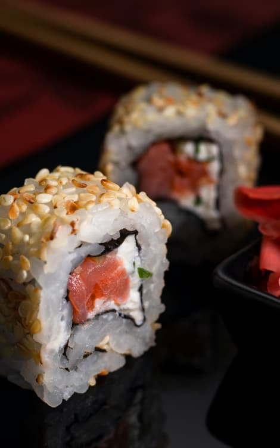
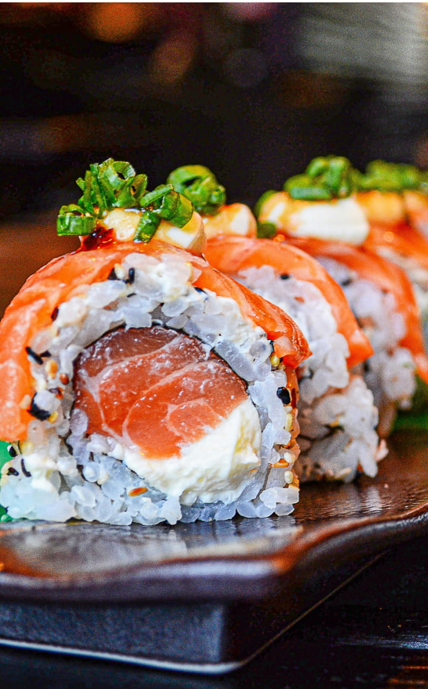
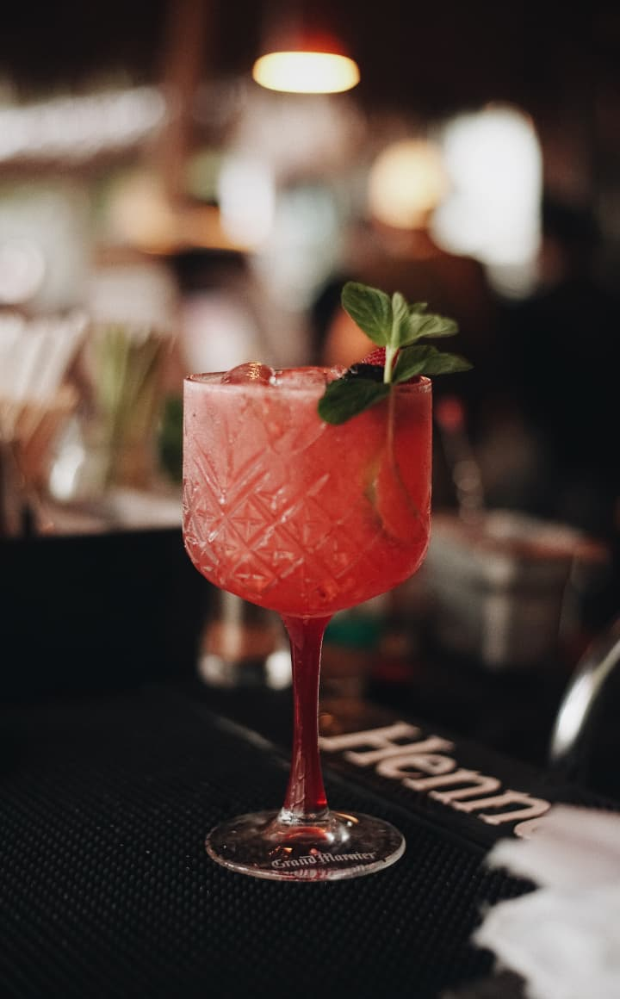

Confira nosso
Cardápio

Combos
Explore mais de 10 combos exclusivos, oferecendo uma ampla variedade de deliciosas combinações para atender a todos os gostos.

À La Carte
Descubra mais de 50 variedades de sushis e sashimis frescos, incluindo pratos quentes e tempurás que elevam a experiência gastronômica

Drinks
Desfrute de uma seleção única de drinks artesanais, perfeitamente harmonizados para complementar a sua experiência